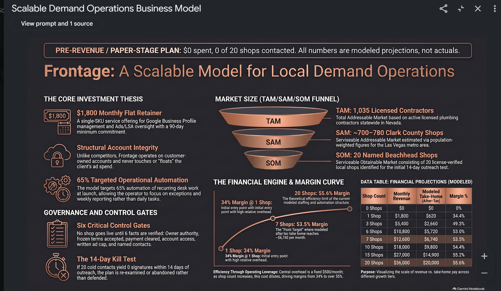

15
The business in five taps
If you only read one section, read this one.
1 of 5
Confidential investor memorandum · prepared for family & private investors only
This is written twice, on purpose: once the way a professional early-stage investor would want it — thesis, market, unit economics, risk — and once in plain English, so nothing hides behind a term you're supposed to already know. Every number below is labeled actual or modeled. Nothing here is a promise of profit.
Prepared by Shawn · Version 2 · Last updated August 31, 2026 · Offer version v1-1800-90d-2026-08-28
Start here too
Listen, watch, or ask — pick your way in
Reading top to bottom is only one option. The exact same memo also exists as a spoken conversation, a short video, a one-page visual summary, and a live AI you can ask any question — all built from this exact document, nothing else.
Two AI hosts talk through the whole memo like a podcast — the kill test, the margin curve, the risks, all of it out loud. Tap "Audio Overview" once it opens.
A short video walkthrough of the idea, the money, and the plan. Tap "Video Overview" once it opens.
Same link — type any question in the chat box, like "how does the margin curve work?" or "what happens if no plumber signs?" It answers using only this memo.

01 · Start here
The investment thesis
Investor terms
Frontage is a bounded, single-SKU local-demand-operations service for licensed, single-location home-service businesses. Beachhead: Las Vegas (Clark County) plumbing contractors. The offer is a $1,800/month, 90-day-minimum retainer for Google Business Profile, review, and Google Ads/LSA management — delivered on customer-owned marketing accounts, funded by the customer's own ad budget under a written cap. Frontage never touches ad spend, never guarantees outcomes, and never performs licensed trade work, which keeps its regulatory, liability, and capital profile closer to a managed-services business than a home-service operator.
At 7 concurrent shops, modeled after-tax operator take-home is ≈$6,740/month on ≈$12,600/month gross retainer revenue. Because central overhead is a fixed $500/month rather than a per-shop cost, margin expands as shop count grows — real operating leverage, shown in Section 07.
This is not "demand is proven." It is: a correctly bounded, low-capital, high-margin services business, in a market that has not been proven to reject the offer, with a named falsification test written before the first dollar is asked for.
Plain English
Shawn wants to build a small business that helps one plumbing company at a time look good on Google — their hours, photos, review replies, and running their Google ads — without ever touching their money or promising things he can't control.
Every plumber pays $1,800 a month for at least 3 months. Right now, zero plumbers have been asked. This whole page is honest about that. It explains exactly how the business would work, why we think plumbers might say yes, why this beat every other idea we looked at, exactly what the math says, and what could go wrong — before you'd ever see a dollar.
02 · Start here
How Frontage actually works
A licensed plumbing owner already has a Google Business Profile and, usually, a Google Ads or Local Services Ads account. Those pages are how homeowners find them when they search "plumber near me." Most owners are under a sink, not updating photos and replying to reviews. Frontage is hired to run only that public-facing side — nothing else.
Investor terms
Delivery model targets ~65% automation of recurring desk workflows at launch (SOP-driven draft generation, ad-change proposals, weekly compiled reporting, automatic pause/exception detection). Human review is reserved for the first sale, ambiguous exceptions, and any action carrying binding or reputational risk to the shop. This is a services business with a software-assisted operating system — not a software product wrapped in services. That distinction matters for how it's priced, regulated, and scaled.
Plain English
Software handles the repetitive, boring two-thirds of the work. A person still makes the first sale, deals with anything weird or risky, and signs off before anything goes out that could get a plumber in trouble. Shawn's job is to read a weekly report and hold a kill switch — not to be the front desk every single day.
The full control system that makes "not Shawn every day" actually safe — approval gates, a 72-hour access clock, and eight named failure routes — is in Section 11, Operations & Controls.
03
The problem being sold
Investor terms
Published 2026 contractor-marketing benchmarks put disciplined marketing spend for growth-stage plumbing operators at 7–12% of gross revenue, with plumbing-specific paid search averaging ~$10.49 CPC / ~$129 cost-per-lead, and a typical fully-loaded cost to acquire one paying homeowner customer of $296–$350. The category already validates willingness-to-pay: independent local-SEO/GBP agencies charge $800–$5,000/month for materially the same scope Frontage sells, with $1,500–$4,000/month the most commonly published "boutique" tier for a single location. The open question is not "does anyone pay for this kind of work" — the category answers that. The open question is "will a specific Clark County shop pay Frontage," which is exactly what the 20-shop, 14-day test in Section 09 is built to answer honestly.
Plain English
Plumbers already know Google is basically the whole game for getting the phone to ring. Other companies already charge $800 to $5,000 a month to do exactly this kind of work, all over the country. We're not guessing that people pay for this — they already do. What we don't know is whether the real plumbing shops on our list will pay us. That's the actual unknown, and we wrote down exactly how and when we'll find out — and when we'll admit it isn't working.
One well-documented pattern in this industry: an agency sets up or takes over a client's Google Business Profile under the agency's login, and the shop owner effectively loses control of their own listing — sometimes for months, sometimes only recoverable through Google's formal dispute process. It's common enough that Google publishes an official "request ownership" recovery flow for exactly this scenario. Frontage's answer is structural, not a promise: the owner's account, always, no exceptions — frozen into the concession rules in Section 09 so it can never be quietly negotiated away, even under pressure to close a deal.
Before writing a word to anyone, the 20 licensed Clark County plumbing shops on the initial contact list were each checked against their own public pages for three specific signs of an existing rival: (1) already paying a local-SEO/GBP agency, (2) already buying leads from a national marketplace like Angi or HomeAdvisor's paid tier, or (3) already employing a named in-house office/dispatch role. Result, dated and sourced:
| Signal found on the shop's own public page | Shops | What that means |
|---|---|---|
| Already paying a local-SEO / GBP agency | 0 of 20 | No confirmed incumbent specialist |
| Already buying paid leads (Angi Pro / HomeAdvisor Super Service) | 0 of 20 | No confirmed incumbent marketplace |
| Named in-house office / dispatch role | 3 of 20 | Some in-house capacity — not proof they run GBP/ads themselves |
| None of the three signals found | 11 of 20 | Open, or simply not stated publicly |
| Page unverifiable / no first-party site found | 6 of 20 | Left honestly unresolved, not assumed either way |
04
Market opportunity, sized honestly
| Layer | Estimate | How it was built |
|---|---|---|
| TAM — Nevada, all licensed plumbing contractors | ≈1,035 active licenses | Public Nevada State Contractors Board (NSCB) records, third-party aggregated count |
| SAM — Clark County (Las Vegas metro) estimate | ≈700–780 shops | Population-weighted extrapolation only — Clark County holds roughly three-quarters of Nevada's population. Not a published county figure. |
| SOM — named, license-verified beachhead list | 20 shops, 0 contacted | Pulled directly from NSCB's free public registry, C-1 / C-1D class, Clark County |
| Floor target — shops needed to clear Shawn's $6,000/mo after-tax floor | 7 shops | ≈0.9% of the estimated county pool, or 35% of the 20 named shops — not 100% market capture |
Investor terms
Frontage is deliberately not pitched on TAM size. The bounded first market (Clark County plumbing) already contains roughly 35–40x the shop count needed to clear the founder's income floor, which means the constraint is conversion discipline and delivery quality, not market ceiling. Geographic or vertical expansion (other counties, other trades, other metros) is explicitly deferred — treated in internal planning as a separate, founder-gated "second envelope," never assumed into this model.
Plain English
There are roughly 700–780 licensed plumbing companies just in the Las Vegas area, by our best estimate from public records. We only need about 7 of them paying to hit Shawn's income goal. We are not promising the other 700 will ever say yes — we're saying the room in the market isn't the problem right now. Whether real shops actually sign is the problem, and that's still unproven.
05
Competitive landscape & why this is structured to win
| Option a plumber has today | Typical cost | Structure |
|---|---|---|
| Do it themselves (DIY tools) | $0–$300/mo | Owner's own time; usually the first thing to get neglected |
| Frontage | $1,800/mo flat | Fixed retainer, 90-day minimum, owner keeps every account |
| Boutique local-SEO / GBP agency | $1,500–$5,000/mo | 2–4 person human team; account ownership terms vary by agency |
| Mid-tier / multi-location agency | $5,000–$12,000/mo | Built for multi-truck or multi-location operators, oversized for one shop |
| National paid-lead marketplace (Angi Pro / HomeAdvisor) | ~$129/lead, variable | Cost scales with volume — less predictable, no owned channel built |
Frontage prices at the low-to-middle of the going professional rate for this exact scope of work, while offering a structural guarantee most agencies don't: the owner never loses control of their own account.
Investor terms
Ownership-preserving structure removes the single most common trust objection in this category (agency-held GBP) and is frozen into the concession ceiling — it can never be traded away to close a deal. No ad-spend float keeps Frontage's own balance sheet risk near zero and avoids the "we need your card on file" objection that kills trust with a first-time buyer. An explicit no-guarantee policy sounds like a weakness but functions as a sales differentiator with owners who have been burned by "we'll get you 12 jobs" promises from prior vendors. Automation-first delivery holds the modeled variable cost at ~29% of revenue, letting Frontage price at the low end of the going rate while keeping healthy contribution margin (detailed in Section 07). Zero-cost lead sourcing via NSCB's own free public registry means customer acquisition cost for the beachhead list is not inflated by a paid data vendor.
Plain English
We never take over your Google account, we never touch your ad money, and we don't promise a number of jobs we can't control. Other companies sometimes do all three of those, and it's the reason plumbers get burned. We built the rules so none of that can happen here — not as a sales line, but as a rule that can't be changed just to win a sale.
Each of the 20 licensed shops was checked against a strict, three-class rubric using only dated, first-party public pages (shop websites, Better Business Bureau profiles, and similar) — never inferred from directories, review counts, or guesses. A page had to explicitly state one of the three classes to be counted; "no class stated" was recorded honestly as its own outcome rather than folded into either a positive or negative reading. Individual business names and license numbers are kept in the internal planning file rather than reproduced here, since this document may be shared and those are independent third parties' public records, not our customers.
06
Why this idea, and not one of the others
Before locking on plumbing, Shawn ran an unusual process: five independent AI research systems (built on five different underlying models) each had to independently score a candidate business at 90 or higher out of 100 on every one of five required tests — is the offer bounded, can it run without Shawn as the daily desk, will anyone plausibly buy, can we find buyers, and does the money work — before it was even allowed to become "the plan." That bar had to be cleared by all five, independently, not averaged. It took over 80 rounds of debate and rewriting to get there.
| Research system | Bounded offer | Runs without founder | Demand | Customer acquisition | Unit economics |
|---|---|---|---|---|---|
| Claude | 91 | 90 | 90 | 90 | 90 |
| GPT | 92 | 90 | 90 | 90 | 90 |
| Gemini | 93 | 90 | 90 | 90 | 90 |
| Grok | 91 | 90 | 90 | 90 | 90 |
| Kimi | 93 | 90 | 90 | 90 | 90 |
| Idea | Stage | Why it was rejected |
|---|---|---|
| Underground storage-tank compliance software | Early rounds | Never cleared the planning-confidence bar |
| HVAC inspection packs | Early rounds | Never cleared the bar |
| Grease-trap compliance desk | Early rounds | Never cleared the bar |
| Dental / freight / payment-app overlays | Early rounds | Never cleared the bar |
| Amazon FBA reimbursement recovery desk | Backup candidate | Fee is a 25% contingent cut; Amazon API access risk, eligibility disputes, and slow cash made "get a first dollar quickly" much harder |
| Shopify chargeback-recovery desk | Backup candidate | Same shape: evidence disputes, processor dependency, contingent cash, more legal exposure |
| Pallet / warehouse recycling desk | Side candidate | Thrown out for unresolved planning holes — no named recycling partner, unknown local lot density, undefined exception labor |
| Garage-door local demand desk | Alternative trade | One research seat preferred it; the group chose plumbing because its desk model never requires Frontage to judge whether a call is an emergency and dispatch a truck — a line other trades don't respect as cleanly |
Why Las Vegas specifically: Shawn already lives there, Clark County's licensed-contractor list is free and public (no paid data vendor needed), and the whole idea fits inside the $5,000 cap without forming a special legal entity first just to run a test.
07
Unit economics
Investor terms
Per-shop revenue is $1,800/month. Modeled variable cost is $525/shop (~29% of revenue — a labor-equivalent envelope, not a vendor invoice). That leaves a ~71% gross margin per shop. Central overhead is fixed at $500/month total, regardless of shop count — not a per-shop allocation. Because it's fixed, it dilutes as volume grows, which is textbook operating leverage: take-home margin rises from 34% at 1 shop to ~54% at 7 shops to ~56% asymptotically as shop count increases further.
Plain English
Each shop pays $1,800. It costs about $525 to actually do the work for that one shop. The $500 "keep the whole desk running" cost stays the same $500 whether there's 1 shop or 20 — it doesn't multiply. So the more shops there are, the smaller a slice that flat $500 takes out of the pie, and the bigger the take-home slice gets, as a percentage. That's the real reason more shops is genuinely better, not just "more revenue."
Modeled arithmetic from the frozen paper formula. Not measured, not a forecast.
Left bars are paper math. Actual today, at every shop count, is still $0 — zero shops are paying.
08
Financial scenarios — paper only
| Shops | Monthly revenue | Monthly take-home | Margin | Annualized take-home |
|---|---|---|---|---|
| 0 (today, actual) | $0 | $0 | — | $0 |
| 1 | $1,800 | $620 | 34.4% | $7,440 |
| 3 | $5,400 | $2,660 | 49.3% | $31,920 |
| 6 (still short of floor) | $10,800 | $5,720 | 53.0% | $68,640 |
| 7 (clears the floor) | $12,600 | $6,740 | 53.5% | $80,880 |
| 10 | $18,000 | $9,800 | 54.4% | $117,600 |
| 15 (extra math) | $27,000 | $14,900 | 55.2% | $178,800 |
| 20 (extra math) | $36,000 | $20,000 | 55.6% | $240,000 |
09
Go-to-market & sales discipline
"We run a local demand desk for one plumbing shop at a time. You keep your Google Business Profile and Google Ads accounts. You fund ads under a written monthly cap you set. We do not guarantee jobs. We do not book jobs without your approval. The retainer is $1,800 per month for 90 days. Yes or no on those terms."
Every priced ask ends in exactly one of two states: signed on those exact terms, or declined, logged with a specific reason (price, ownership terms, wants FAB to float ad spend, wants a guarantee, wants unconstrained booking, no authority to sign, no response, other). "Interested," "following up," "thinking about it," and "unsigned template on file" are explicitly banned from ever being logged as progress. Most small services businesses quietly die in that mushy middle — this one is written so it can't hide there.
Allowed flexibility: scheduling the access-grant window, the owner's chosen (owner-funded) ad cap amount, and pause/cancel language — none of which touch price, term, or ownership.
10
Operations, automation & the control system
No shop goes live just because someone said yes on a phone call. Every location has to pass six named, checkable facts before any work, billing, or account access happens:
| Required fact | What happens if it's missing |
|---|---|
| Authority — real owner or documented binder signed | No commercial progress at all |
| Frozen terms accepted exactly as written | No substituted terms allowed |
| Payment actually cleared (not an unpaid link) | Stays paused, no access clock starts |
| Usable access to the owner's own accounts | Stays paused — no workaround account, ever |
| Written, owner-funded media cap | No ad-facing task enters the queue |
| Named approval / pause / escalation contacts | Cannot go live without someone accountable |
All six must be true within 72 hours of a signature, or the location automatically pauses — no manual override except a logged, named exception with an expiration date. Nothing quietly "stays in progress" forever.
| Failure type | Response window | Who owns it |
|---|---|---|
| Wrong output / unauthorized change | 4 hrs to customer, 24 hrs to resolve | Desk operations |
| Missed deadline | 8–24 hrs | Access operations / Desk |
| Access lost | 2 hrs to customer | Access operations |
| Ad-cap risk | 4 hrs to confirm stop | Media operations |
| Refund / chargeback | 8–24 hrs | Billing operations |
| Google/portal change | 8–48 hrs | Media / Access operations |
| Data incident | 1 hr | Incident operations |
| Signer authority dispute | 24 hrs then decline | Desk operations |
"Operations" cells are named roles and rules, not hires. Shawn's designed involvement is a weekly written health report and a global kill switch — zero planned daily desk minutes.
11
Risk factors — the honest register
12
Use of the $5,000 startup cap
| Category | Bound | Status |
|---|---|---|
| Legal entity / DBA filing | Inside $5,000 cap | Not started — needs Shawn's go-ahead |
| Liability insurance premium | Inside cap, amount unknown | Blocked — no quote exists anywhere yet |
| Domain + minimal hosting | Inside $5,000 cap | Not started |
| Customer ad spend | $0 — never Frontage's money | Always customer-funded, always capped in writing |
| Paid lead lists / scraping tools | $0 — not used | Free public NSCB registry used instead |
| Product app / hosted backend | $0 — banned pre-revenue | Explicitly deferred until a paying shop justifies it |
13
What you receive as investor
A dated scorecard. Milestones hit vs. still ahead. Real cash in and out, kept in two separate ledgers so nothing gets blended. Paper projections clearly labeled as paper. The full risk list. A new copy the moment anything material moves.
Made-up profit. A fake ownership split. "We already make $6,000." Templated internet numbers copied to the penny across unrelated businesses — that pattern was flagged and rejected as a red flag, not adopted here.
14
Milestones · done, now, next, later
15
The business in five taps
1 of 5
16 · Reference
Glossary
17 · Reference
Questions
18 · Reference
Update log
August 31, 2026 — hub page. Added a "Listen, watch, or ask" section right up top linking to the Gemini Notebook (50-minute audio conversation, 5-minute video, live chat) and embedded the one-page visual infographic directly on this page, so everything lives at one link.
August 31, 2026 — v2, full investor memo. Rebuilt from a thin progress page into a full memo: mechanics, market sizing with real cited sources, competitive landscape, the selection process that killed seven other ideas, unit economics with the operating-leverage explanation, risk register, use of funds, and governance gaps — all in both investor terms and plain English.
August 31, 2026 — v1, first investor briefing. Still on paper. $0 in, $0 out, 0 shops. Idea, rules, and a fake-shop practice run were done. No plumber contacted.
When a milestone moves, this page gets a new dated line and every number above changes with it. This page is hosted at one fixed link — the same link always shows the latest version once updated.